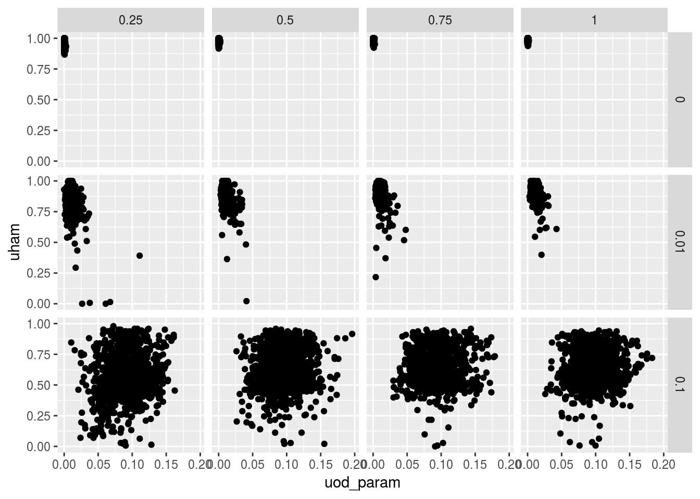

I see if the proportion correctly genotyped is associated with the estimated OD parameter, even if the true OD parameter does not change. The answer is not really. A little bit when there is small od.
library(tidyverse)## Loading tidyverse: ggplot2
## Loading tidyverse: tibble
## Loading tidyverse: tidyr
## Loading tidyverse: readr
## Loading tidyverse: purrr
## Loading tidyverse: dplyr## Conflicts with tidy packages ----------------------------------------------## filter(): dplyr, stats
## lag(): dplyr, statssims <- as_data_frame(read.csv("~/Code/reproduce_genotyping/Output/sims_out/sims_out.csv"))
ggplot(sims, mapping = aes(x = uod_param, y = uham)) +
geom_point() +
facet_grid(od_param ~ bias_val)
group_by(sims, bias_val, od_param) %>% summarize(cor = cor(uod_param, umse)) %>%
ungroup()## # A tibble: 12 x 3
## bias_val od_param cor
## <dbl> <dbl> <dbl>
## 1 0.25 0.00 0.21324
## 2 0.25 0.01 0.47075
## 3 0.25 0.10 -0.19587
## 4 0.50 0.00 0.15146
## 5 0.50 0.01 0.34389
## 6 0.50 0.10 -0.03995
## 7 0.75 0.00 0.17260
## 8 0.75 0.01 0.29328
## 9 0.75 0.10 -0.02385
## 10 1.00 0.00 0.12458
## 11 1.00 0.01 0.33745
## 12 1.00 0.10 -0.07020sessionInfo()## R version 3.3.2 (2016-10-31)
## Platform: x86_64-pc-linux-gnu (64-bit)
## Running under: Ubuntu 16.04.2 LTS
##
## locale:
## [1] LC_CTYPE=en_US.UTF-8 LC_NUMERIC=C
## [3] LC_TIME=en_US.UTF-8 LC_COLLATE=en_US.UTF-8
## [5] LC_MONETARY=en_US.UTF-8 LC_MESSAGES=en_US.UTF-8
## [7] LC_PAPER=en_US.UTF-8 LC_NAME=C
## [9] LC_ADDRESS=C LC_TELEPHONE=C
## [11] LC_MEASUREMENT=en_US.UTF-8 LC_IDENTIFICATION=C
##
## attached base packages:
## [1] stats graphics grDevices utils datasets methods base
##
## other attached packages:
## [1] dplyr_0.5.0 purrr_0.2.2.2 readr_1.0.0 tidyr_0.6.1
## [5] tibble_1.3.3 ggplot2_2.2.1 tidyverse_1.1.1
##
## loaded via a namespace (and not attached):
## [1] Rcpp_0.12.11 plyr_1.8.4 forcats_0.2.0 tools_3.3.2
## [5] digest_0.6.12 lubridate_1.6.0 jsonlite_1.5 evaluate_0.10.1
## [9] nlme_3.1-131 gtable_0.2.0 lattice_0.20-34 rlang_0.1.1
## [13] psych_1.6.12 DBI_0.6 yaml_2.1.14 parallel_3.3.2
## [17] haven_1.0.0 xml2_1.1.1 stringr_1.2.0 httr_1.2.1
## [21] knitr_1.16 hms_0.3 rprojroot_1.2 grid_3.3.2
## [25] R6_2.2.2 readxl_0.1.1 foreign_0.8-67 rmarkdown_1.6
## [29] modelr_0.1.0 reshape2_1.4.2 magrittr_1.5 backports_1.0.5
## [33] scales_0.4.1 htmltools_0.3.6 rvest_0.3.2 assertthat_0.2.0
## [37] mnormt_1.5-5 colorspace_1.3-2 labeling_0.3 stringi_1.1.2
## [41] lazyeval_0.2.0 munsell_0.4.3 broom_0.4.2This R Markdown site was created with workflowr